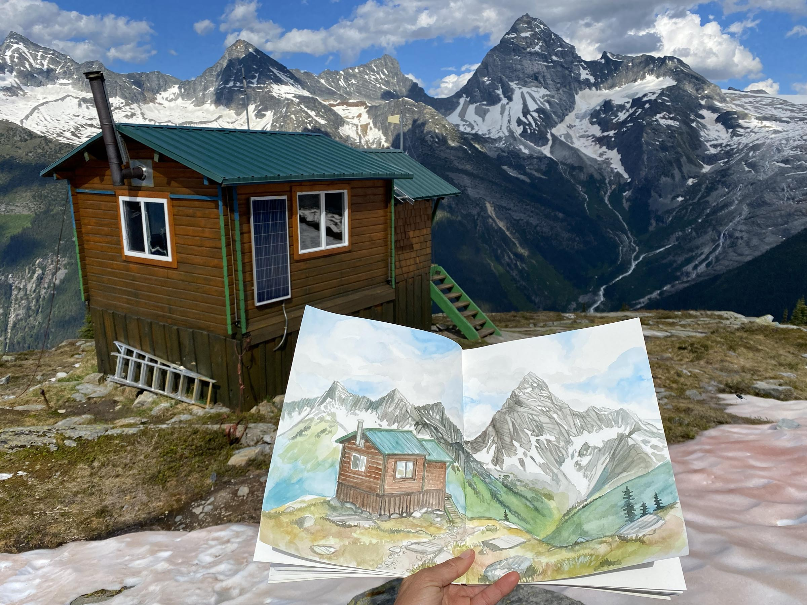
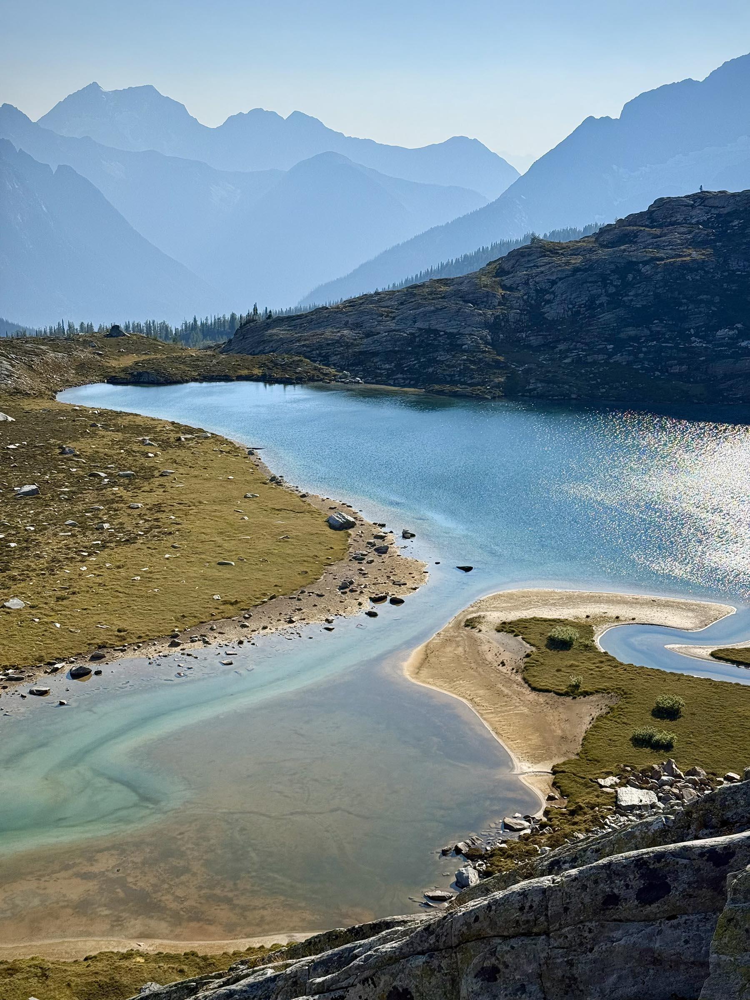
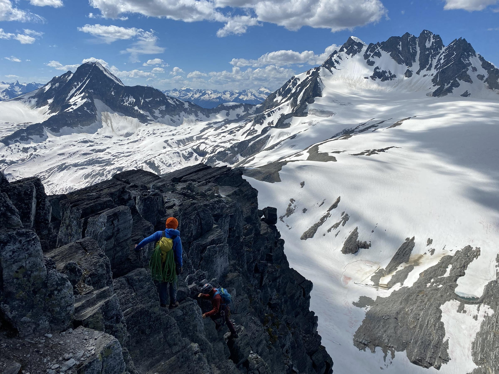
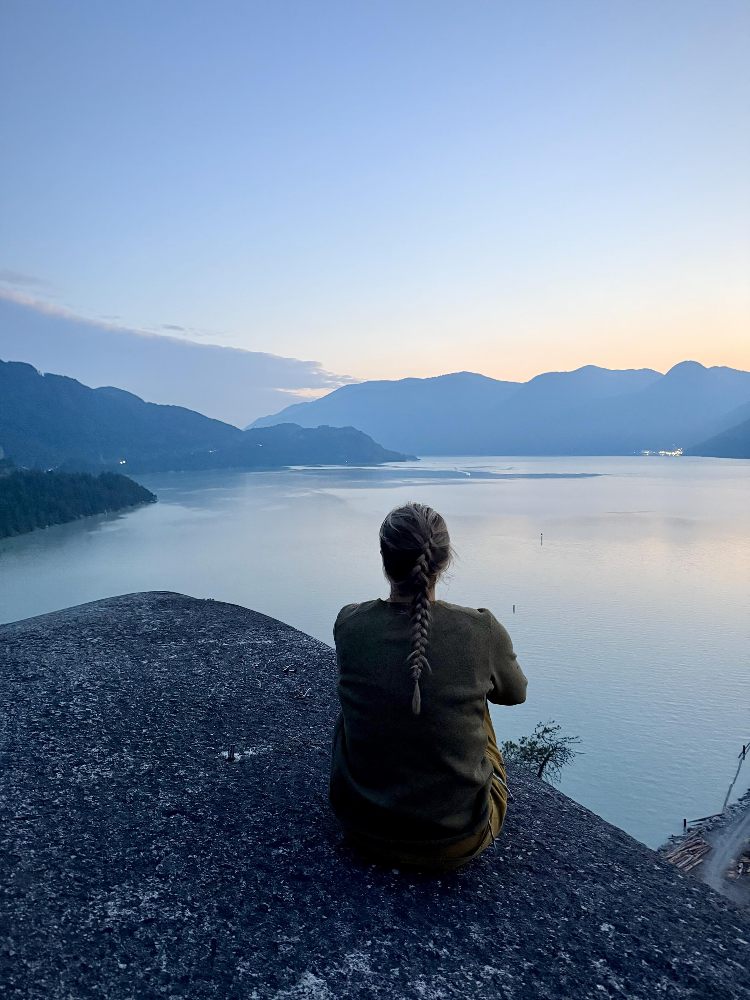
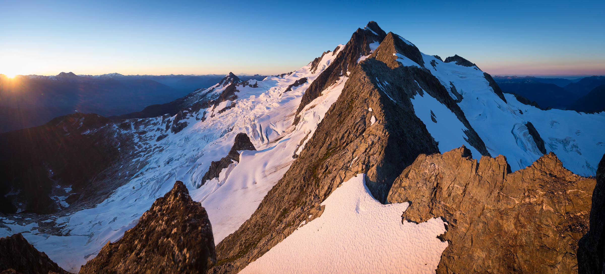
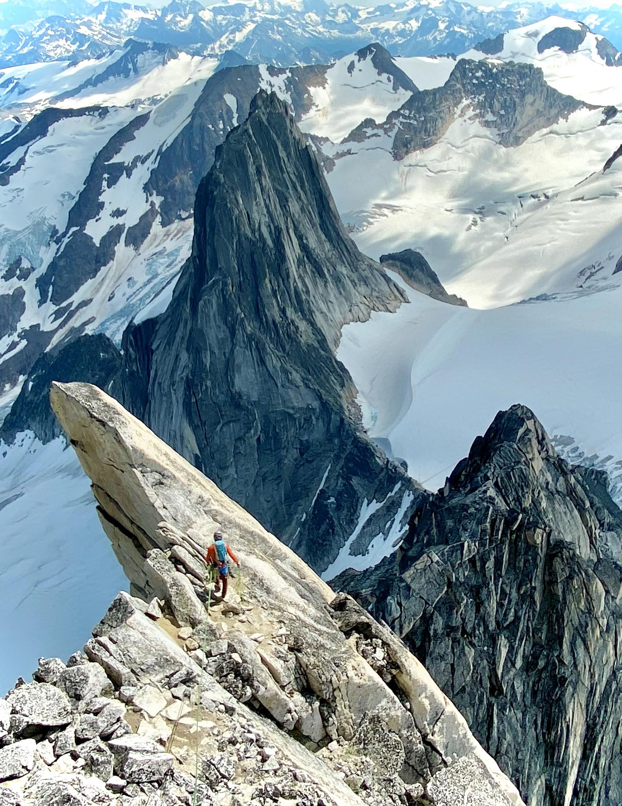
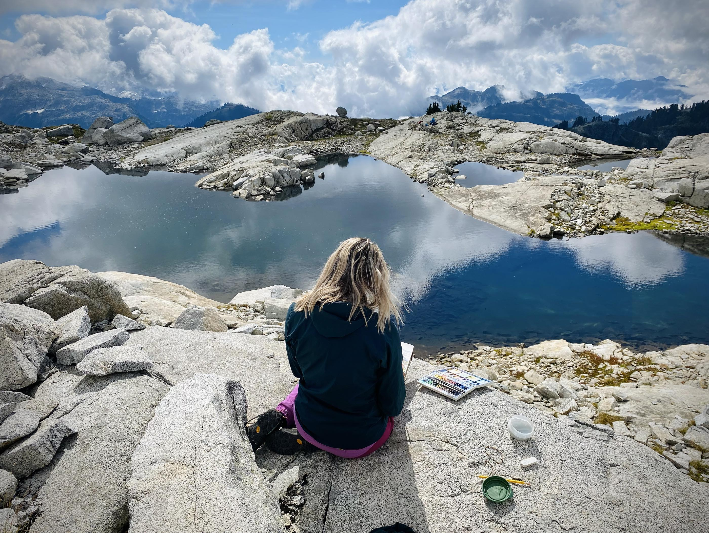
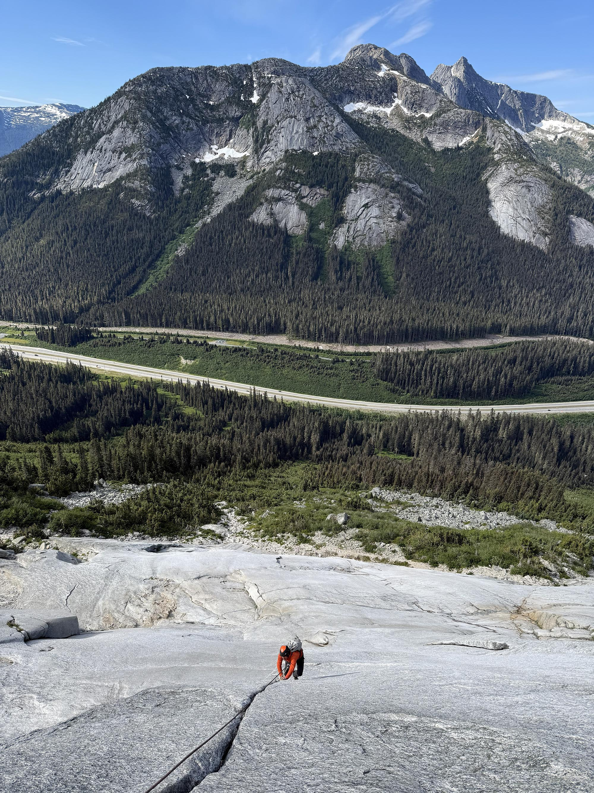

Snippets of inspiration from time spent in the wild. Reference photos captured in the moment & watercolour studies from far & wide. Every piece I create has a story behind it & is painted with vivid memories of my time spent in the mountains. Follow along on my journey :)

July 31 2025
Escaping down the back side of North Howser Spire in the Bugaboos as lightning strikes all around. Inspiration for "All Along the Watchtower"

July 30 2025
Flying into East Creek in the Bugaboos. Inspiration for "All Along the Watchtower"

July 12 2025
On the second-to-last pitch of Angel's Crest in Squamish BC
{kind=link}

Summer 2022
Pleinair study in Rogers Pass during my 2022 Residency with Parks Canada
{kind=link}

Fall 2025
Up above Monica Meadows. Future inspiration?
{kind=link}

Summer 2022
On the West Ridge of mt. Tupper in Rogers Pass. Inspiration for "Ascension"
{kind=link}

Summer 2025
Sunset on the Malamute
{kind=link}

Summer 2020
Sunrise after bivvying high on the Tantalus Traverse. Inspiration for "Evening Light on the Tantalus Traverse"
{kind=link}

Summer 2022
Descending Bugaboo Spire after climbing the Northeast Ridge. Inspiration for "The Gendarme"

Fall 2025
Up above the col between mt Monica & mt Amen-Ra in the Kootenays. From there, we followed the ridgeline out towards the lake of the hanging glacier.
{kind=link}

Fall 2023
Painting the ideal campsite at a tarn in Pinecone-Burque Provincial Park
{kind=link}

Summer 2025
On the lower pitches of Yak-Check